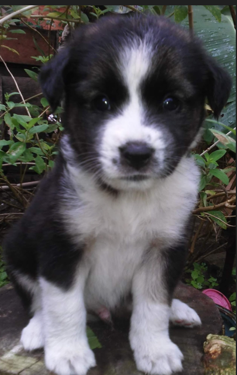
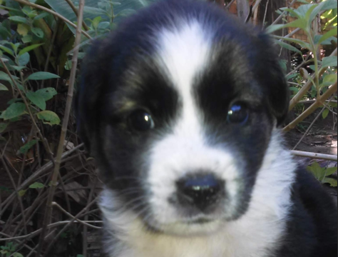
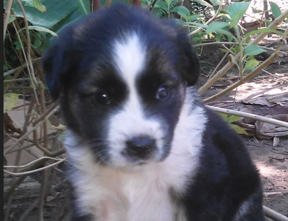
Beethoven 🐶
Sobre o Thor
Thor é um filhote extremamente dócil, brincalhão e cheio de energia. Ele adora comer, brincar com crianças e receber carinho. Está vacinado e pronto para encontrar uma família amorosa.
Convive muito bem com outros animais, gosta de correr, brincar com bolinhas e receber atenção dos humanos.
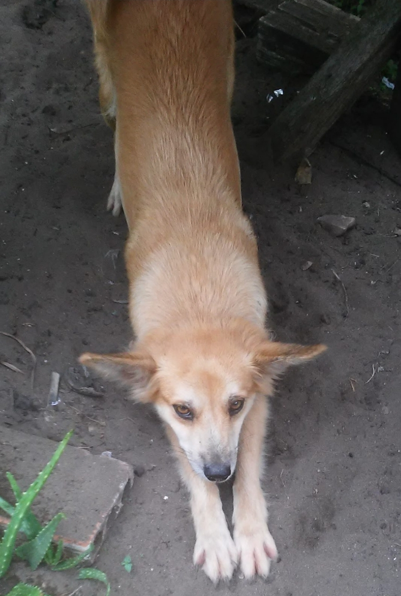
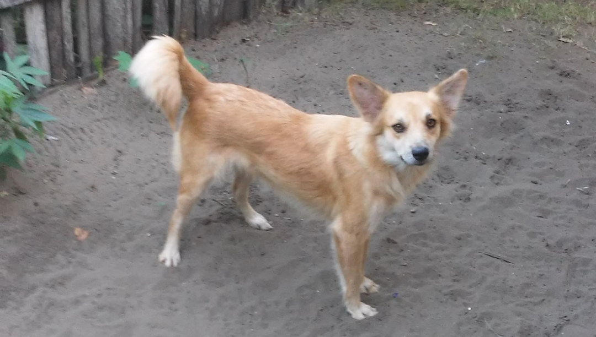
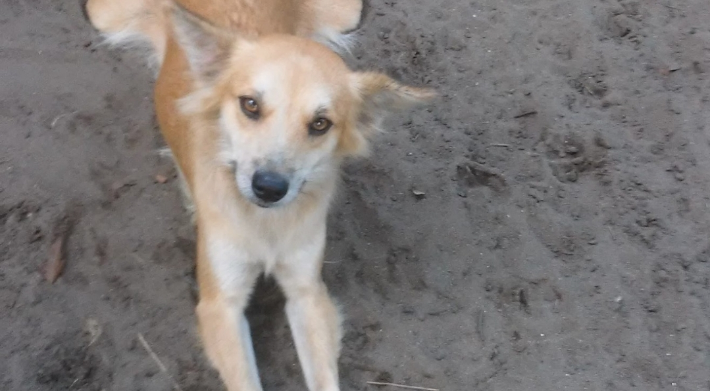
Polly 🐶
Sobre a Polly
Polly é uma cadela jovem, super carinhosa, companheira e que adora ficar no passear. Ela foi resgatada de uma situação de abandono nas ruas e agora está saudável, castrada e cheia de amor para dar.
É ideal para quem mora em casa grande que tenha quintal devido ao seu porte e temperamento mais agitado. Se dá muito bem com gatos e outros cães.
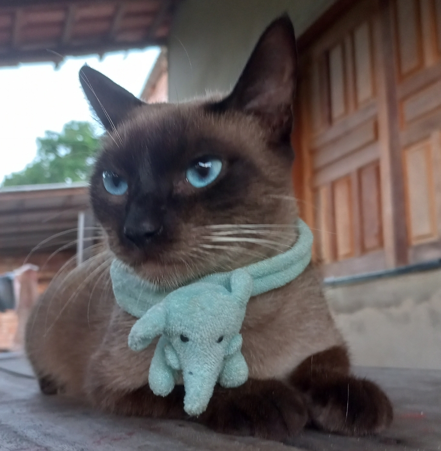
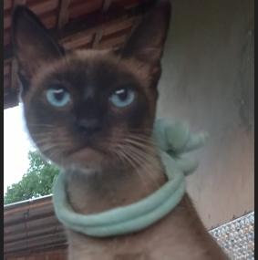
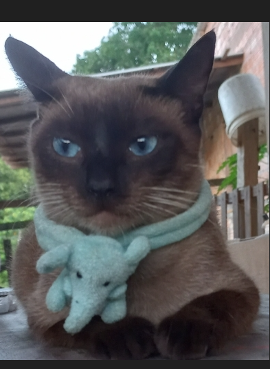
Pimpona 🐱
Sobre a Pimpona
Pimpona é uma gatinha extremamente dócil, ronronenta e muito carinhosa. Adora um novelo de lã, caixas de papelão e um bom cantinho ensolarado para tirar seus cochilos. Ela foi acolhida por uma ONG parceira e está ansiosa por um lar definitivo.
Já está perfeitamente adaptada ao uso da caixa de areia, come ração seca está castrada e convive muito bem em ambientes internos e apartamentos telados.
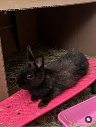
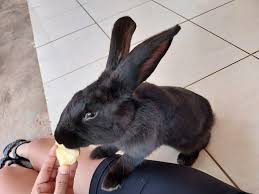
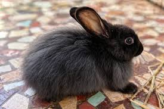
Cenourinha 🐰
Sobre o Cenourinha
Cenourinha é um coelhinho de pelagem preta brilhante, da raça Mini Lionhead. Ele é dócil, extremamente curioso e adora explorar o ambiente dando pequenos saltos de alegria. Foi acolhido após ser deixado em um parque público e hoje está super saudável.
Adora comer feno fresco, folhas escuras e ganhar carinho na cabecinha. É um pet muito silencioso, ideal para quem busca uma companhia tranquila para ambientes internos.